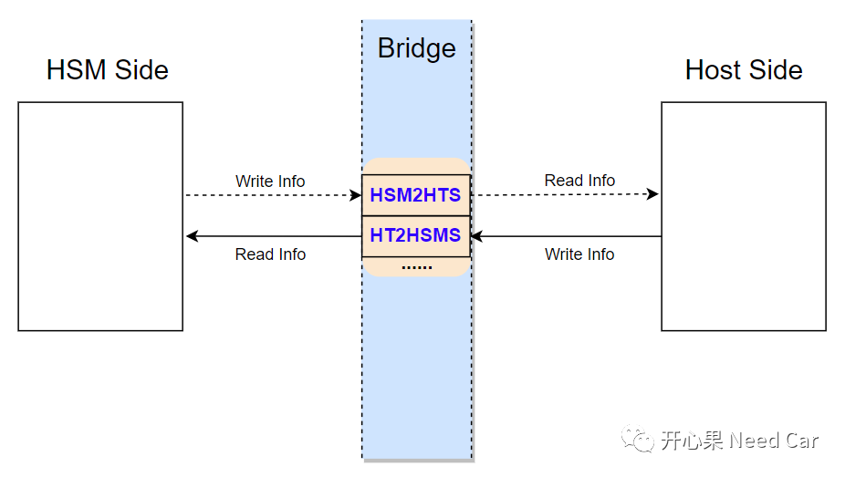
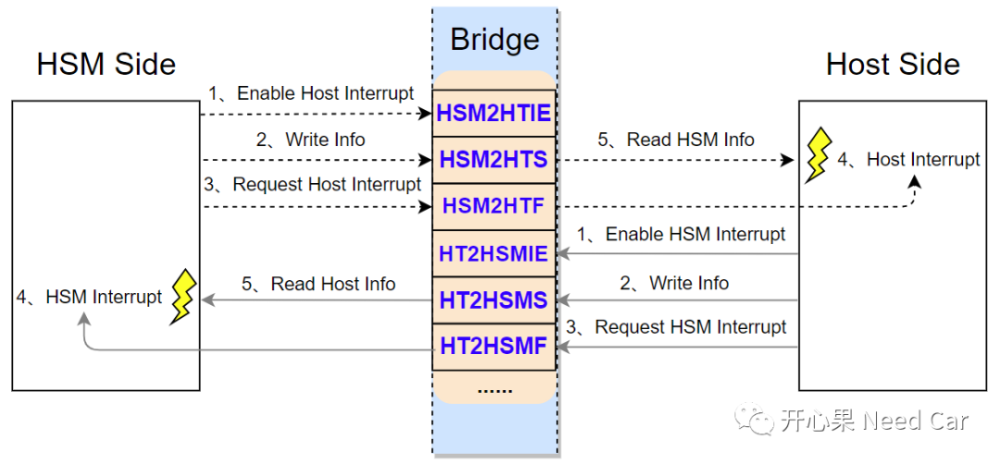
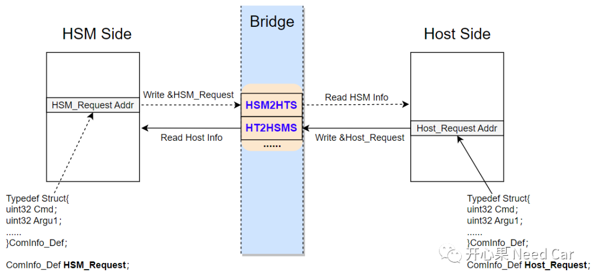
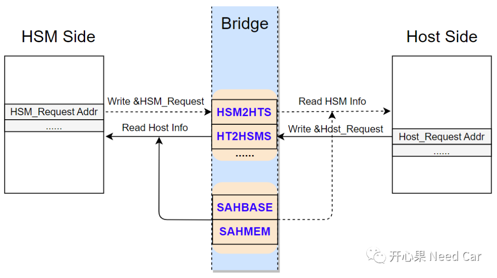

开心果 Need Car · 2025-03-25T06:32:00+08:00 · 微信原文
前文《信息安全基础：Host与HSM通信科普》描述了HSM与Host的两种通信方式。本文细化HSM与Host的通信实现原理，即：如何通过状态寄存器交互信息。HSM通过HSM2HTS（HSM to Host Status）寄存器，将要传递的信息通知Host端，该寄存器对于HSM Core，可读可写，对于Host Core，仅可读；Host通过HT2HSMS（Host to HSM Status）寄存器，将要传递的信息通知HSM端。该寄存器对于HSM Core，仅可读，对于Host Core，可读可写。
提示：基于TC3xx讨论
1、HSM与Host如何通过状态寄存器交互信息？

既然一方写入信息，另一方何时读取呢？关于通信，收/发双方无非就两种方式：轮询（Polling）和中断（Interrupt）。本文讨论中断方式，除了状态寄存器以外，还有HSM2HTF（HSM to Host Flag Register）以及HT2HSMF（Host to HSM Flag Register）寄存器。
HSM2HTF：HSM触发一个Host中断（置位Host中断对应标志位），以便于Host可以及时处理HSM的请求，之后由Host清除对应的中断标志位；
HSM与Host的信息交互，示意如下所示：

（一）信息如何写？

这样得到处理有什么好处呢？如上图，不管是HSM还是Host，定义的变量均消耗自身的内存（Memory），变量的内存位置由编译器（Compiler）分配，不用特意开辟一块Share Memory，降低了维护成本。当然，缺点也明显：大数据量交互时，相比于Share Memory，此方式相对力不从心。所以，通过状态寄存器获取信息地址以后，就可以通过访问窗口寄存器SAHBASE（Single Access to Host Base Address Register）、SAHMEM（Single Access to Host Memory Window）访问剩余信息，示意如下：

拓展思考
Hostaddress =[SAHBASE]+（HSMaddress-SAHMEM）& 0xFFFF
其中，SAHBASE寄存器存放Host的基地址，即：高16bit。当SAHBASE获得Host的基地址（eg：0xB0000000）以后，SAHMEM寄存器即可单向访问Host的内存空间（最大64KByte）。也就是可以通过0xF0050000~0xF005FFFF区间地址访问Host的64 KByte。
举例：假设Host和HSM设置的共享RAM区起始地址是0xB0000000，HSM的SAHBASE存储0xFFFF0000 & 0xB0000000 = 0xB0000000。之后，HSM可以通过0xF0050000-0xF005FFFF访问Host的0xB0000000-0xB000FFFF。即：HSM Core访问0xF0050000-0xF005FFFF等于访问了Host的0xB0000000-0xB000FFFF。
往期精彩回顾